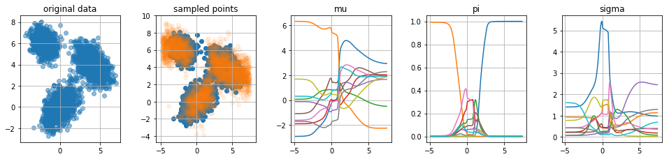
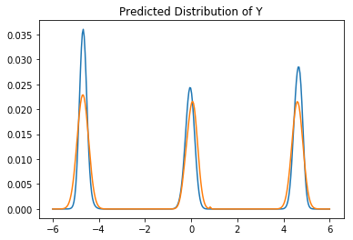

Combine the Neural with the Normal.
In this document I will demonstrate density mixture models. The goal for me was to familiarize myself with tensorflow a bit more but it grew to a document that compares models too. The model was inspired from this book by Christopher Bishop who also wrote a paper about it in 1994. I’ll mention some code in the post but if you feel like playing around with the (rather messy) notebook you can find it here.
A density mixture network is a neural network where an input \(\mathbf{x}\) is mapped to a posterior distribution \(p(\mathbf{y} | \mathbf{x})\). By enforcing this we gain the benefit that we can have some uncertainty in our prediction (assign a lot of doubt for one prediction and a lot of certainty for another one). It will even give us the opportunity to suggest that more than one prediction is likely (say, this person is either very tall or very small but not medium). The main trick that facilitates this is the final hidden layer which can be split up into three different parts:
The idea is that the final prediction will be a probability distribution that is given by the trained output nodes via; \[ p(\mathbf{y} | \mathbf{x}) = \sum_{i=1}^k \pi_i \times N(\mu_i, \sigma_i) \]
Graphically, and more intuitively, the network will look something like:
All the non-coloured nodes will have tahn activation functions but to ensure that the result is actually a probability distribution we will enforce this neural network to:
Note that the architecture we have is rather special. Because we assign nodes to probibalistic meaning we enforce that the neural network gets some bayesian properties.
The implementation is relatively straightforward in tensorflow. To keep things simple, note that I am using the slim portion of contrib.
import tensorflow as tf
# number of nodes in hidden layer
N_HIDDEN = [25, 10]
# number of mixtures
K_MIX = 10
x_ph = tf.placeholder(shape=[None, 1], dtype=tf.float32)
y_ph = tf.placeholder(shape=[None, 1], dtype=tf.float32)
nn = tf.contrib.slim.fully_connected(x_ph, N_HIDDEN[0], activation_fn=tf.nn.tanh)
for nodes in N_HIDDEN[1:]:
nn = tf.contrib.slim.fully_connected(nn, nodes, activation_fn=tf.nn.tanh)
mu_nodes = tf.contrib.slim.fully_connected(nn, K_MIX, activation_fn=None)
sigma_nodes = tf.contrib.slim.fully_connected(nn, K_MIX, activation_fn=tf.exp)
pi_nodes = tf.contrib.slim.fully_connected(nn, K_MIX, activation_fn=tf.nn.softmax)
norm = (y_ph - mu_nodes)/sigma_nodes
pdf = tf.exp(-tf.square(norm))/2/sigma_nodes
likelihood = tf.reduce_sum(pdf*pi_nodes, axis=1)
log_lik = tf.reduce_sum(tf.log(likelihood))
optimizer = tf.train.RMSPropOptimizer(0.01).minimize(-log_lik)
init = tf.global_variables_initializer()With the implementation ready, I figured it would be nice to generate a few odd datasets to see how the architecture would hold. Below you will see five charts for four datasets.

When looking at these charts we seem to be doing a few things right:
If you look carefully though you could also spot two weaknesses.
The values for sigma can suddenly spike to unrealistic heights, this is mainly visable in the fourth plot. I’ve introduced some regularisation to see if it helps. The model seems to improve, not just in the \(\sigma\)-space but also in the \(\mu\)-space we are able to see more smooth curves.
The regularisation can help, but since \(\pi_i\) can be zero (which cancels out the effect of \(\sigma_i\)) you may need to regulise drastically if you want to remove it all together. I wasn’t able to come up with a network regulazier that removes all large sigma values, but I didn’t care too much because I didn’t see it back posterior output (because in those cases, one can imagine that \(\pi_i \approx 0\)).
Our model is capable of sampling wrong numbers around the edges of the \(x\)-space, this is because \(\sum_i \pi_i = 1\) which means that for every \(x\) the likelihood must be zero. To demonstrate the extremes consider these samples from the previous models;
Note how the model seems to be drawing weird samples around the edges of the known samples. There’s a blob of predicted orange where there are no blue datapoints to start with.
Because \(\sum \pi(x) = 1\) we are always able to generate data in regions where there really should not be any. You can confirm this by looking at the \(\mu\) plots. We could append this shortcomming by forcing that \(\sum \pi(x) = 0\) if there is no data near \(x\). We could “fix†this by appending the softmax part of the \(\pi_i\) nodes with a sigmoid part.
This can be done, but it feels like a lot of hacking. I decided not to invest time in that and instead considered comparing mixture density networks to their simpler counterpart; gaussian mixture models.
It is fashionable thing to try out a neural approach these days, but if you would’ve asked me the same question three years ago with the same dataset I would’ve proposed to just train a gaussian mixture model. That certainly seems like a right thing to do back then so why would it be wrong now?
The idea is that we throw away the neural network and that we train \(K\) multivariate gaussian distributions to fit the data. The great thing about this approach that we do not need to implement it in tensorflow either since scikit learn immediately has a great implementation for it.
from sklearn import mixture
clf = mixture.GaussianMixture(n_components=40, covariance_type='full')
clf.fit(data)With just that bit of code, very quickly train models on our original data too.
The model trains very fast and you get the eyeball impression that it fits the data reasonably.
Let’s zoom in on predictions from both models to see how different they are.
It should be said that we’ll be making comparisons between two approaches without any hypertuning (or even proper convergence checking). This is not very appropriate academically, but it may demonstrate the subtle differences in output better (as well as simulate how industry users will end up applying these models). Below we’ll list predictions from both models.
In each case, we’ll be given an \(x\) value and we want to predict the \(y\) value. The orange line is the neural approach and the blue line is from the scikit model. I’ve normalized both likelihoods on the same interval in order to compare them better.

It’s not exactly a full review but just from looking at this we can see that the models show some modest differences. The neural approach seems to be more symmetric (which is correct; I sampled the data that way) but it seems to suffer from unfortunate jitter/spikyness at certain places. More data/regularisation might fix this issue.
Other than that, I would argue the normal scikit learn model is competitive simply because it trains much faster which could make it feasible to do a grid search on the number of components relatively quickly.
Both methods have it’s pros and cons, most notably;
Again, if you feel like playing around with the code, you can find it here.
For attribution, please cite this work as
Warmerdam (2017, Nov. 1). koaning.io: Feed Forward Posteriors. Retrieved from https://koaning.io/posts/feed-forward-posteriors/
BibTeX citation
@misc{warmerdam2017feed,
author = {Warmerdam, Vincent},
title = {koaning.io: Feed Forward Posteriors},
url = {https://koaning.io/posts/feed-forward-posteriors/},
year = {2017}
}